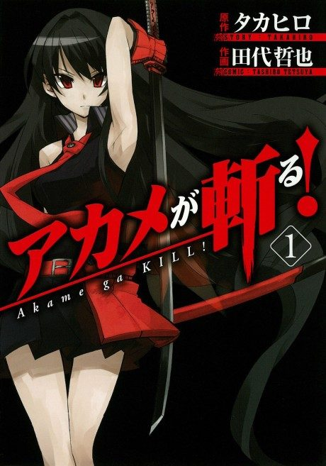

Animeter
 Anime
Anime
Manga2014 · Action, Adventure, Drama
Akame ga Kill!
アカメが斬る！
AniList7.3
Animeter—
Episodes24 ep
MangaCh. 39
Key events
These are spoilers. They stay blurred until you reveal them, one at a time or all at once.
Joining Night Raid Ep 1–6
- Tatsumi's childhood friends are tortured to death by a seemingly kind noble family.
- Tatsumi kills the corrupt police captain Ogre and wins Akame's respect.
- Akame defeats the executioner Zanku the Beheader.
- Seryu and her creature Koro ambush Night Raid, killing Sheele.
The Three Beasts Ep 7–8
- Bulat defeats Liver but succumbs to poison.
- Tatsumi inherits Bulat's armor Incursio and kills Nyau.
Esdeath and the Jaegers Ep 9–14
- Esdeath falls for Tatsumi after he wins a tournament and drags him to the palace.
- Tatsumi escapes and warns Night Raid about the Jaegers.
- Night Raid kills Dr. Stylish after he turns himself into a Danger Beast.
- Tatsumi and Esdeath are stranded together on an island, where she reveals her past.
Path of Peace and Kyoroch Ep 15–19
- Leone loses an arm fighting Kurome's puppet army, and Chelsea assassinates the Jaeger Bols.
- Chelsea takes Bols's form to poison Kurome but is caught and killed.
- Mine kills Seryu, and Bolic is killed in the attack on the palace at Kyoroch.
The Revolution Ep 20–24
- Lubbock dies after killing Syura, and Tatsumi is captured and sentenced to death.
- Mine defeats General Budo but dies after confessing her love to Tatsumi.
- Tatsumi stops the Emperor's giant Imperial Arm and dies in Akame's arms.
- Akame kills Esdeath and Leone kills the Prime Minister before dying of her wounds.